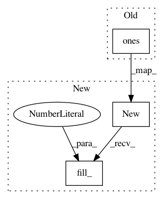

12304107085cb11ed618d2902699bee99f67b26a,gpytorch/utils/lanczos_quadrature.py,StochasticLQ,_lanczos_step_batch,#StochasticLQ#Any#Any#Any#Any#,74
Before Change
//Numerical Problems
rhs_vectors += 1e-10
a = torch.max(a, torch.ones(a.size()) * 1e-20)
norm_vs = torch.max(norm_vs, torch.ones(norm_vs.size()) * 1e-20)
U += 1e-10
After Change
// Numerical Problems
rhs_vectors += 1e-10
a = torch.max(a, a.new(*a.size()).fill_(1) * 1e-20)
norm_vs = torch.max(norm_vs, norm_vs.new(*norm_vs.size()).fill_(1) * 1e-20)
U += 1e-10
In pattern: SUPERPATTERN
Frequency: 3
Non-data size: 3
Instances
Project Name: cornellius-gp/gpytorch
Commit Name: 12304107085cb11ed618d2902699bee99f67b26a
Time: 2017-09-27
Author: gpleiss@gmail.com
File Name: gpytorch/utils/lanczos_quadrature.py
Class Name: StochasticLQ
Method Name: _lanczos_step_batch
Project Name: rusty1s/pytorch_geometric
Commit Name: cfde32ac6bc27f875d38b57f1ba9a08f2b5fe4c2
Time: 2018-01-15
Author: matthias.fey@tu-dortmund.de
File Name: torch_geometric/datasets/cuneiform.py
Class Name: Cuneiform
Method Name: __getitem__
Project Name: cornellius-gp/gpytorch
Commit Name: 49d45e6e0a80a3029caea54ced0df9aee6214410
Time: 2017-10-01
Author: gpleiss@gmail.com
File Name: gpytorch/utils/lanczos_quadrature.py
Class Name: StochasticLQ
Method Name: _lanczos_step_batch